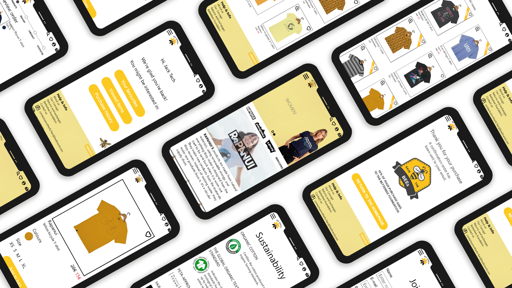

Basic UX theme was a mix of both individual research and problem solving in a team based on collected data and focusing on designing a positive user experience. During the theme together with four my colleagues, we developed a concept of a mobile T-shirt web shop called Bee Green and designed a prototype of it focusing on user’s purchase flow.
Acquired competences
I learnt different methods of research and purpose for each of the method and got experience on how to approach people to get non-biased and targeted answers. I learnt to develop data driven solutions while working in a team, therefore, I developed my communication and finding synergy skills. I significantly improved my Adobe XD prototyping skills and practised delivering a deck pitch to an audience.

Data collection
The project began with conducting individual research. I focused on people’s t-shirt wearing habits: such as percentage of people wearing T-shirts, occasions suitable for wearing it, types of T-shirts people wear based on gender, age, occupation, T-shirt buying and shopping online in general habits. During the qualitative research I interviewed people not only about general T-shirt wearing but also their approach to sustainability and fair trade and what would make them switch from fast fashion brands to slow fashion. The sustainability topic ended up being our main concept and focus in a groupwork.
Early prototypes
The groupwork began with both individual and group brainstorming sessions and ideation process, considering different aspects of the web shop, optimising and combining the ideas into one web shop’s concept. We continued ideation with sketches and paper prototyping that was a base and a guide for creating a digital prototype.
Webshop concept. Identifying problems and developing solutions.
Developing a T-shirt web shop idea was challenging without acknowledging problems that clothing industry faces: overproduction, enormous pollution of nature and violation of workers’ rights. And yet, sustainable fashion brands do not get enough credibility and are not equal competitors with fast fashion brands. We decided to address all of these problems with our web shop. We decided to empower already existing sustainable brands that do not get enough credibility, but stand for fair trade, ecology. Therefore, our T-shirt web shop was a solution to help already existing sustainable T-shirt brands have a platform and get more attention.
User interface design
User interface is one of the most important things that makes up a positive user experience, therefore, it is important to mention UI conventions that we used. Besides from using such design principles as Gestalt similarity and proximity laws to indicate the meaning of the content, we also used UI conventions such as breadcrumbs and iconography such as magnifying glass for search, filter icon, hamburger menu, shopping cart, heart icon to like your favourite items and human icon to identify the profile page. Another thing that was used was microcopy which leads and helps the user navigate.